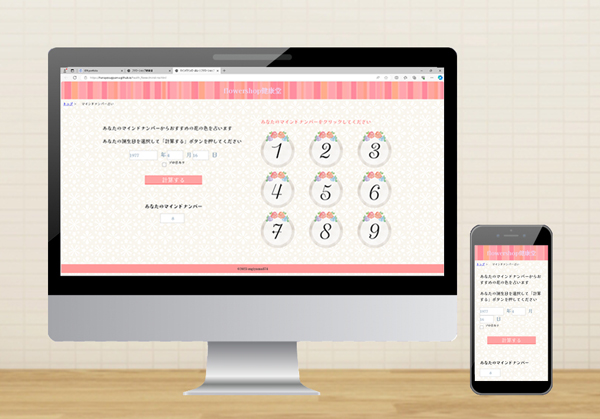

【架空サイト】flowershop健康堂
職業訓練校 入校4ヶ月目 課題
【概要】
テーマ「健康」を視覚の面から考えて、花を愛でることで健康になろう！と花屋のサイトを作成しました。
本来はカンプのみの課題でしたが、コーディングにも挑戦しました。
提出は１点で良いところ、色々な機能を実装したかったので、クラスで唯一２点提出し、努力賞を頂戴しました。
マインドナンバー占いを作成したところがポイントです。
ご自身の誕生日を入力してぜひ占ってみてください
【使用したツール】
HTML5、css3、JavaScript、VSコード、Photoshop、Illustrator、Figma